Онкодерматологія та Хірургічна Дерматологія у Києві
Професійна діагностика новоутворень шкіри, дерматоскопія, біопсія, Mohs-хірургія та висічення за міжнародними онкологічними протоколами.
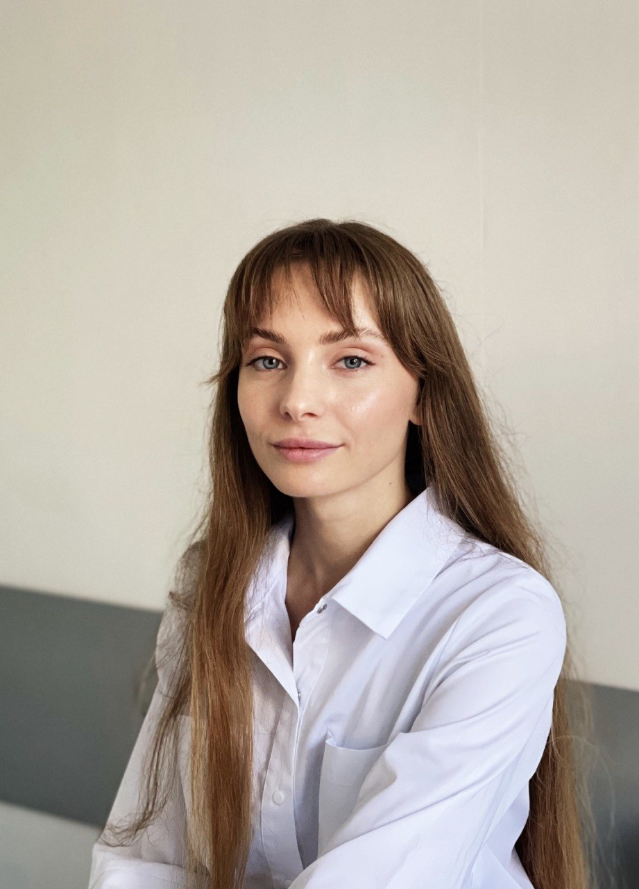
Основні напрямки прийому
Діагностика та Скринінг
- Дерматоскопічне обстеження
- Скринінг злоякісних новоутворень
- Динамічне спостереження за невусами
Біопсія шкіри
- Панч, інцизійна, ексцизійна та шейв-біопсія
- Патогістологічна експертиза
Хірургічне лікування & Mohs
- Видалення меланоми, базальноклітинного та плоскоклітинного раку
- Mohs-хірургія
- Радіохвильове та класичне висічення
Практичні маніпуляції та кабінет
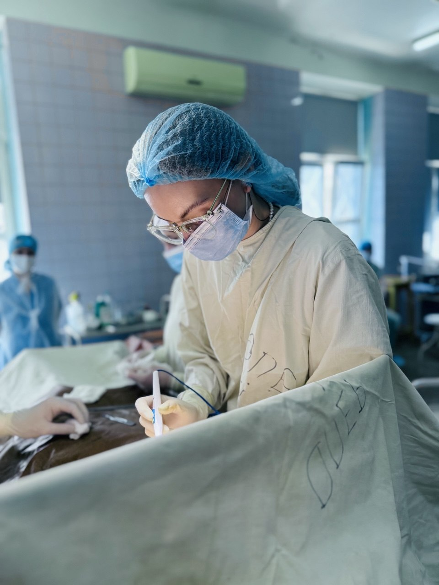
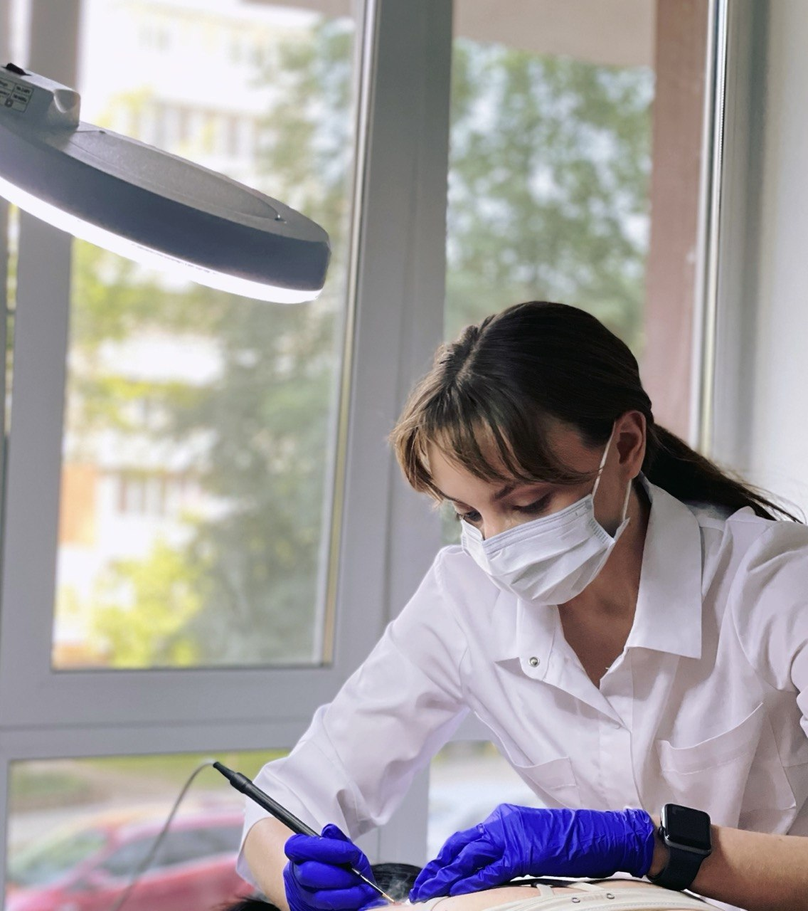
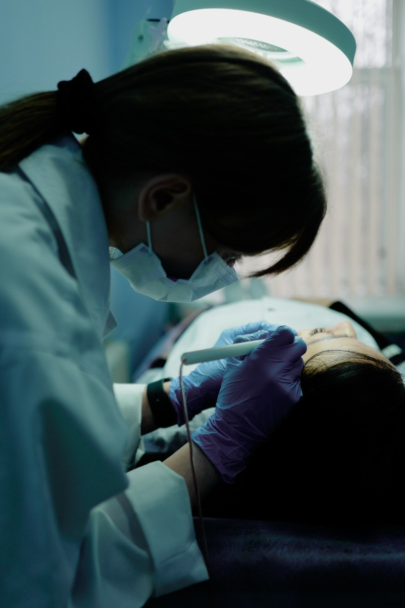
Про лікаря
Членство в асоціаціях:
- International Dermoscopy Society (IDS)
- European Academy of Dermatology and Venereology (EADV)
- Українська асоціація лікарів-дерматовенерологів і косметологів
Катерина Разумейко
Загальний стаж клінічної роботи — 7 років
Спеціалізація
Основний професійний напрям роботи — онкодерматологія та хірургічна дерматологія: діагностика, спостереження та хірургічне лікування новоутворень шкіри.
Спеціалізуюсь на дерматоскопії та ранній діагностиці злоякісних новоутворень шкіри, цифровому картуванні, біопсії новоутворень шкіри, а також їх радіохвильовому, діатермокоагуляційному та хірургічному видаленні.
Досвід одразу у дерматовенерології, хірургії та онкохірургії дозволяє комплексно оцінювати кожне новоутворення — від первинної діагностики до визначення показань до спостереження, біопсії або хірургічного лікування.
Освіта
Досвід роботи
Перелік послуг
Консультація та діагностика
- Консультація лікаря-дерматовенеролога
- Консультація хірурга-онколога / дерматоонколога
- Огляд та діагностика новоутворень шкіри
- Дерматоскопія новоутворень шкіри
- Скринінг шкіри для раннього виявлення злоякісних новоутворень
- Динамічне спостереження за меланоцитарними невусами та іншими новоутвореннями шкіри
- Визначення показань до біопсії або видалення новоутворення
Біопсія шкіри
- Панч-біопсія
- Інцизійна біопсія
- Ексцизійна біопсія
- Шейв-біопсія
Видалення доброякісних новоутворень
- Невуси (родимки)
- Папіломи та фіброепітеліальні поліпи
- Себорейні кератоми
- Дерматофіброми
- Атероми
- Ангіоми
- Інші доброякісні новоутворення шкіри та підшкірної клітковини
Хірургічна дерматологія
- Хірургічне видалення новоутворень шкіри
- Радіохвильове видалення
- Видалення методом діатермокоагуляції
- Висічення новоутворень із накладанням косметичних швів
- Хірургічна корекція післяопераційних рубців
- Зняття швів та післяопераційне ведення рани
Онкодерматологія
- Діагностика підозрілих новоутворень шкіри
- Рання діагностика меланоми
- Діагностика базальноклітинного та плоскоклітинного раку шкіри
- Біопсія новоутворень із підозрою на злоякісний процес
- Хірургічне лікування злоякісних новоутворень шкіри в межах відповідних показань
- Mohs-хірургія
- Формування подальшої тактики спостереження після встановлення діагнозу
Кейси
Приклади практичної роботи: результати дерматологічного та хірургічного лікування новоутворень шкіри.
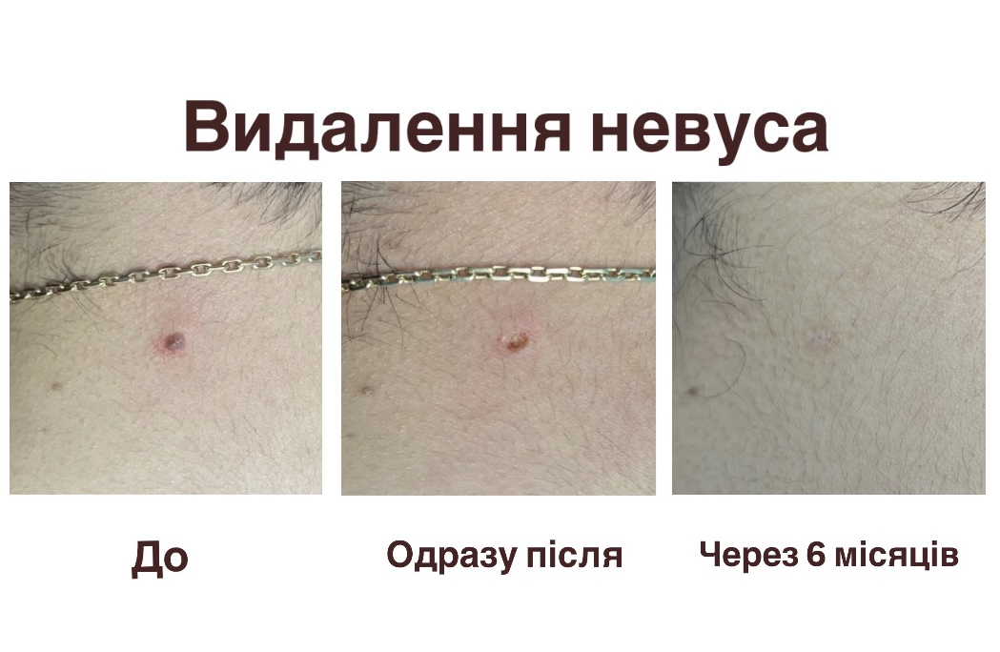
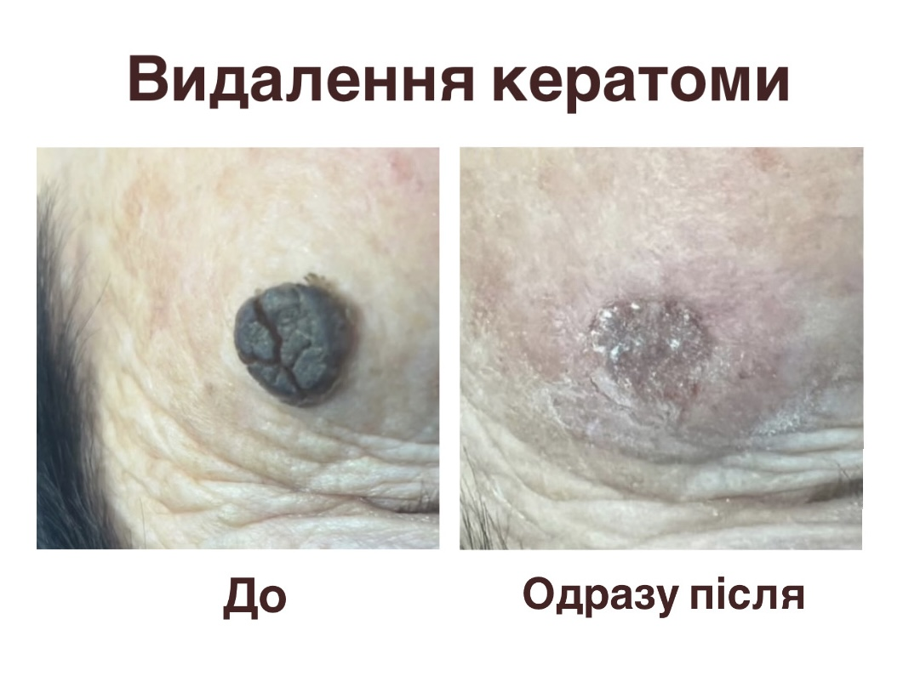
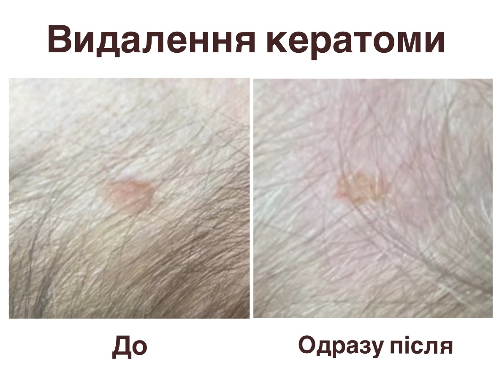
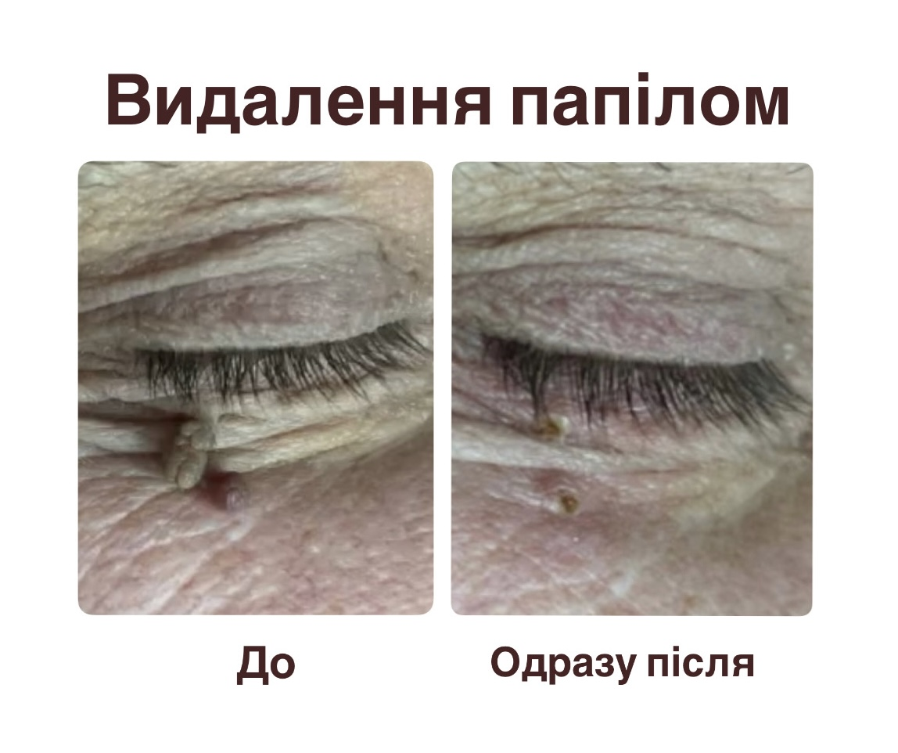
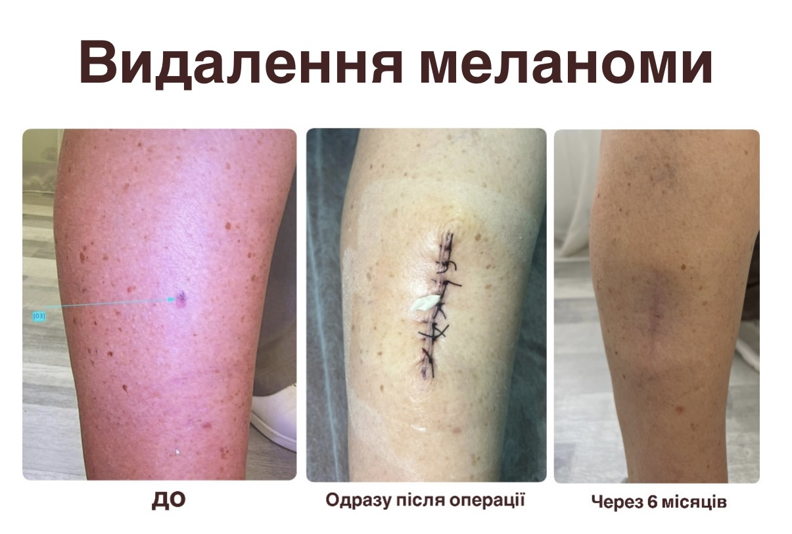
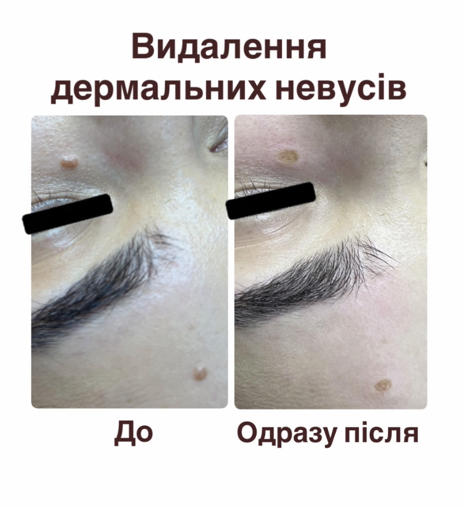
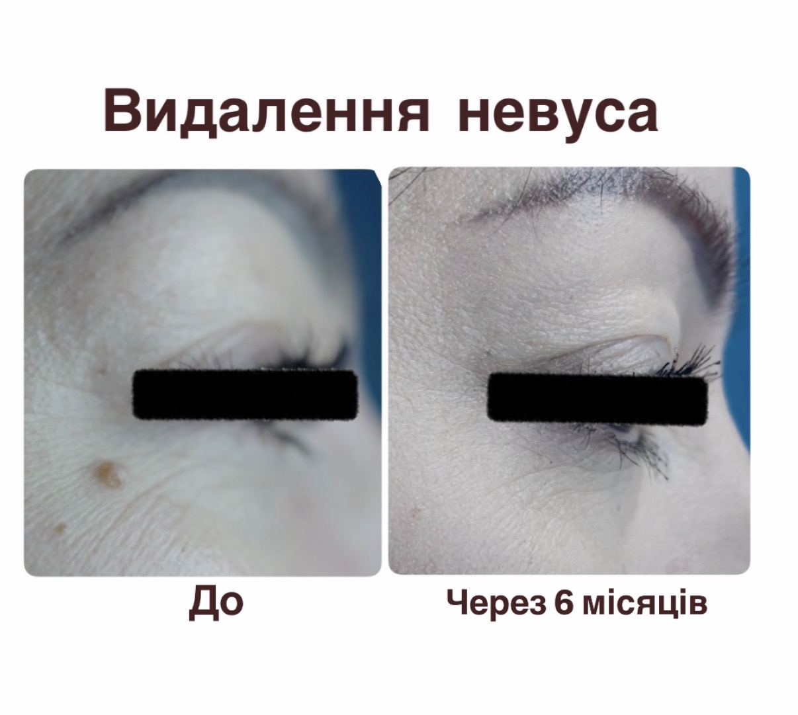
Часті питання (FAQ)
Чи можна видалити родимку одразу під час консультації?
У багатьох випадках — так! Спочатку лікар проводить огляд новоутворень шкіри та визначає, чи можна видаляти утворення та підбирає оптимальний метод видалення. Якщо мова йде про звичайну родимку та радіохвильовий метод видалення — процедура відбувається одразу. Якщо необхідні додаткові обстеження або ж інша тактика, це обговорюється з пацієнтом індивідуально та складається план лікування.
Чи потрібно видаляти всі родимки?
Ні! Більшість невусів не потребують видалення. Видалення може бути рекомендоване за медичними та естетичними показаннями, на консультації лікар детально оглядає всі новоутворення та дає рекомендації по кожному з них.
Які родимки треба видаляти?
Для видалення родимок існують медичні та естетичні показання. До медичних показань відноситься хронічне травмування родимки (сюди ж відносяться виступаючі над рівнем шкіри родимки, що натираються одягом) та підозрілі ознаки при дерматоскопії. Естетична сторона питання теж важлива: якщо пацієнту не подобається вигляд родимки, вона заважає та спричиняє дискомфорт — це пряме показання до видалення.
Який найкращий метод видалення?
Метод видалення обирається індивідуально в залежності від виду, розміру та місця розташування новоутворення, а також особливостей та побажань пацієнта. На консультації лікар пояснює особливості, переваги та недоліки кожного методу для конкретного новоутворення та обирає найоптимальніший варіант з урахуванням всіх факторів.
Чи відправляється видалений матеріал на гістологію?
Якщо ми говоримо про родимки, то так, після видалення лікар обов’язково відправляє матеріал на гістологічне дослідження. Саме гістологія дозволяє остаточно підтвердити діагноз, визначити характер новоутворення та оцінити повноту видалення (за потреби).
Чи залишиться шрам після видалення?
Будь-яке порушення цілісності шкіри викликає формування рубця. Його вигляд залежить від методу видалення, глибини та місця розташування новоутворення, протікання післяопераційного періоду та індивідуальних особливостей загоєння шкіри пацієнта. Лікар підбирає оптимальний метод, відштовхуючись від медичних та естетичних факторів, а також надає детальні рекомендації по загоєнню післяопераційної рани для отримання максимально естетичного результату.
Коли необхідно терміново показати родимку лікарю?
Будь-які зміни в ділянці утворення — привід показатися лікарю. Тривожними ознаками є: швидкий ріст, зміна форми та кольору, асиметрія утворення, кровоточивість. Та варто пам’ятати, що на початку в утворенні може не бути жодних змін, видимих неозборним оком. Помітити перші зміни можливо лише за допомогою дерматоскопа, тож не нехтуйте щорічними чек-апами у дерматолога/дерматоонколога.
Що робити, якщо відбулась травма родимки?
Обробити ранку прозорим антисептиком. Якщо рана кровоточить — притиснути ватним диском або невеликим відрізком бинта на 5-10 хвилин, заклеїти дихаючим гіпоалергенним пластирем та записатись на плановий огляд у дерматоонколога.
Локація та Запис
Консультативний прийом
Адреса: м. Київ, проспект Любомира Гузара, 3, корпус 4
Графік роботи: понеділок–п’ятниця 09:00–14:00
Телефон: +380939637998
Запис через месенджери та соцмережі: